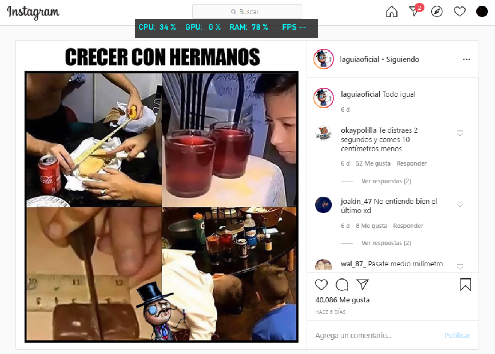
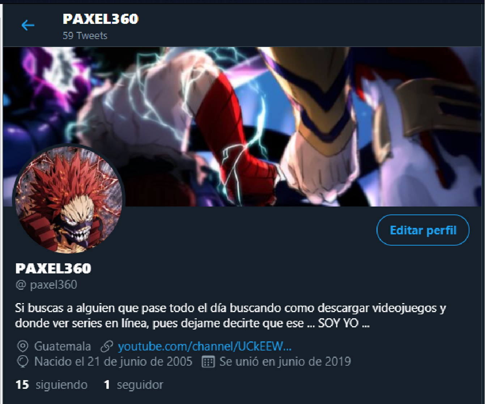

REDES SOCIALES:
Esta canción me gusto, tanto por la instrumentaria y tambien la letra.

Descargar canción

Descargar canción

Bueno, las redes sociales, ¿por donde empiezo?
Las redes sociales son programas que hacen que gente de todo el mundo se reuna, pero para ese objetivo, las redes sociales necesitan de Internet.
Hay muchas redes sociales y de seguro cientos mas en desarrollo, pero algunas de estas son:
*Estas cifras estan enumeradas en escalas de millon, ejemplo: 2= 2 millones*

Viendo esto, me recordé de algo, visiten mis redes sociales:
(darle click a las imagenes para que funcione.)


Ahora si,despues del "Spam" empezemos:
(Hablaré solo de las mas visitadas en esta parte del mundo y un pequeño resumen, tales como "QQ" y "WeChat" no seran incluidas.)
Resumenes:
Facebook:
 Volver
Volver
Esta aplicacion esta entre nosotros desde el 2004, ofreciendonos actualmente muchas opciones para poder convivir,
Desde: Messenger(si, en la gráfica aparece aparte pero es de la misma compañia.) hasta Marketplace.
Esta plataforma llego al idioma español hasta el 2008, y algo mas sorprendente es que nuestro país no esta en los primeros paises con mas usuarios de habla hispana, algo interesante y triste.
Pero Facebook no siempre fue lo que es ahora, antes solo se limitaba a la Universidad de Stanford, como si fuera un tipo de Whatsapp solo para los estudiantes de todos los grados, luego poco a poco se fue haciendo mas grande y
al paso de los años, llegando a mas escuelas y fue hasta el 2006 que con el simple hacho de tener mas de 13 años ya podias adentrarte en ese basto mundo de las publicaciones.
*pongo este video para un poco de humor y para ver que no todo es bueno en marketplace*.
Youtube:
Volver
Todavia recuerdo cuando vi mi primer video en youtube, fue de un canal que todos los de mi epoca y los de la epoca pasada a la mia recordarán
pero bueno, Youtube fue creado en 2005 por 3 ex-empleados de Paypal, algo interesante es que usaba Adobe Flash para su reproduccion en sus inicios y que en 2016 fue desechado.
Y este fue su primer video, el primer video de youtube en la historia:
Pero fue hasta el 2006 que Google adquirio a Youtube por 1,650 Millones de dolares y desde entonces la plataforma ha ido cambiando a lo largo de los años, en algunos aspectos empeorando, pero en su mayoria mejorando.
Whatsapp:
 Volver
Volver
Esta aplicación que "nació" en el año 2009, puede recibir y
enviar contenido multimedia (.MP3, MP4, .docx, .pdf, .png, .jpg, .gif, etc..)
y que tambien hacer llamadas y videollamadas,ha tenido una gran popularidad,
Originalmente exclusivo para IOS, un año despues para Android
Fue adquirido por Facebook y actualmente es uno de las aplicaciones de mensajeria online mas polulares de la historia, superando incluso a Messenger.
Instagram:
 Volver
Volver
La función de esta redd social es de poder compartir imagenes, fotografias y videos con otros usuarios
Aparte poder poner historias(que duran 24 horas) y mensajes directos a perfiles y actualmente esta disponible para
Android, IOS y Windows 10.
Esta app fue creada en el 2010 y fue ganando popularidad cuando llego a los 100M DE USUARIOS ACTIVOS EN 2012, pero originalmente solo estaba disponible para Iphone, Ipad y Ipod
Luego en 2012 disponible para Android y de último en 2013, fué la beta de Windows phone llegando a su respectiva versión final para windows 10 en el 2016

Tik Tok:

Es una aplicación de medios de iOS y Android para crear y compartir vídeos cortos. La aplicación permite a los usuarios crear vídeos musicales cortos de 3–15 segundos3 y vídeos largos de 30–60 segundos.
Es una plataforma líder de vídeos en Asia, Estados Unidos y otras partes del mundo.
Nacio originalmente con el nombre de Douyin en el año 2016 pero donde agarró mas popularidad fue en el 2018,
donde se convirtio en la a app mas descargada de USA en el mismo año y con mas de 500 M de usuarios conectados mensualmente.
Reddit:
 Volver
Volver
Reddit es un sitio web de marcadores sociales y agregador de noticias donde los usuarios pueden añadir texto, imágenes, vídeos o enlaces, en los cuales la gente puede calificar los posts
si es que les gustó o no (como los likes o dislikes de youtube).
Pero esto no era como lo conocemos ahora, antes esta red social era un Software libre (2009-2017) y cuando llego el 2017 Reddit cerro todo y puso toda su información es los servidores de Github.com
exeptuando las partes "anti-spam".
(Esto ya está fuera de la investigación),
La manera de como fue que conocí a la red Reddit fue en el reto 50/50, que de ninguna manera recomiendo que lo visite solo decia de como es que las redes me dijeron que el reto y la red existía, solo recomiendo que ver lo que esta en youtube (eso esta censurado), solo para informarse, pero si quiere ver, el link esta allí pero esta bajo su propio riesgo,
PD: no me baje puntos y tampoco quiero una llamada de atención solo queria decir mi experiencia :(.
Twitter:
 Volver
Volver
Creado en 2006 y lanzado en julio del mismo año esta red social se ha vuelto el SMS del Internet teniendo mas de
300 Millones de usuarios, mas de 800,000 búsquedas y mas de 65,000 tuits al día.
Está la versión en internet y otra que se encuentra como aplicación para telefonos celulares, en las cuales los usuarios pueden agregar un máximo de 300 caracteres en cada publicación
En esta tienen la opción de agregar:
Dele click a la imagen V
Hecho por Paxel360 (18/6/2020)